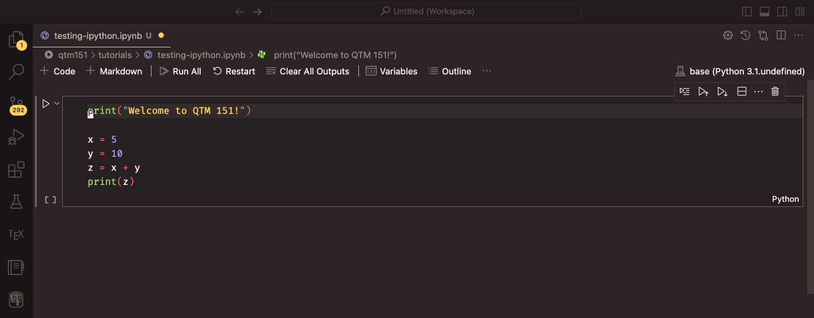

Hello, world!Lecture 1: Getting Started with Python
BAA1118 - Foundations of Programming for Analytics & AI
Damien Dupré
About Me
Damien Dupré, PhD
- email: damien.dupre@dcu.ie
- phone: 00353 (0)1 700 6360
- office: Q233 DCU Business School
Since 2019, I have been teaching Data Analytics and Statistics at DCU Business School.

Module Content
Knowledge
- How code is written and read
- How data is stored and transformed
- How a prediction is made
Skills
- Python
- Google Colab, VS Code
- pandas, matplotlib, seaborn
- statsmodels, scikit-learn
Content
- 2hrs per week of lectures
- 1hr per week of tutorials (from week 3)
Slides
Available on the module’s loop page and, more importantly, online at:
Module Roadmap
| Week | Topic |
|---|---|
| 2 | Variables, types and operators |
| 3 | Collections: lists, dictionaries and friends |
| 4 | Control flow: conditions and loops |
| 5 | Functions, modules and packages |
| 6 | From Colab to your own machine |
| 7 | Data manipulation with pandas |
| 8 | Aggregating, joining and reshaping |
| 9 | Data visualisation |
| 10 | Linear regression and prediction |
What About You?
- Who is convinced they are “not a maths person”?
- Who uses Microsoft Windows, macOS, or Linux?
- Who already has a GitHub account?
- Who has already written a line of code in any language?
- Who has used ChatGPT, Claude, or Copilot to write code?
No previous experience is assumed. We start from zero.
Module Assessment
90% Inclass Test
- 1h Inclass Test on October 29
- 1h Inclass Test on November 26
10% Kubicle Courses
The Only Rule That Matters
- You cannot learn to code by watching someone else code
- You cannot learn to code by reading about code
- You learn to code by typing code, getting an error, and fixing it
Every lecture has “Your Turn” slides. Those are the lecture. The rest is context.
1. Why Python?
Why Python?
Modern data analytics uses free and open-source languages:
- Proprietary software (SPSS, Stata, SAS, Matlab) is expensive, closed, and increasingly rare in industry
- Python and R are the two dominant open-source languages
- R is mostly used in academic research and public institutions
- Python is, by far, the most used language in organisations
Python is also a general purpose language: the same skill writes a data analysis, a web scraper, an automation script, or a machine learning model.
Why Python?
Python is:
- Readable: the code looks close to English
- Free: no licence, ever
- Huge: about 500,000 packages available
- Employable: consistently top 3 in job postings for analyst roles

What Python Is Not
- Python is not a spreadsheet. There is no grid, and nothing recalculates by itself.
- Python is not intelligent. It does exactly what you write, including the mistakes.
- Python is not fast to write at the beginning. It becomes fast when a task has to be done twice.
The value of code is reproducibility: the same script run on new data gives you the new answer in one second.
Excel or Python?
| Excel | Python | |
|---|---|---|
| Small, one-off table | Excellent | Overkill |
| 2 million rows | Impossible | Fine |
| Same report every month | Copy-paste | One command |
| Show what you did | Click history lost | The script is the record |
| Fix a mistake in step 2 | Redo everything | Change one line, rerun |
They are not competitors. Most analysts use both.
2. Python and its Interfaces
Language vs Interface
There are two key concepts to keep separate:
- Python is the name of the language
- Python code is written in an interface called an IDE (Integrated Development Environment)
At its simplest, Python is like a car’s engine, while an IDE is like a car’s dashboard.
Language vs Interface
Python: the engine

Does the work. You never look at it directly.
IDE: the dashboard

Where you type, where you see results, where errors are highlighted.
In a default installation, the two are installed separately. This is the single most common source of week-1 frustration.
Popular Python IDEs
- VS Code: lightweight, highly customisable, the industry default
- PyCharm: feature-rich, heavier, free for students
- Spyder: designed for scientific computing, feels like RStudio
- JupyterLab: notebook-first, runs in your browser
- Positron: newer, from the RStudio team, handles Python and R
Anaconda is a fifth option: it bundles Python, an IDE and 1,500 packages in one 1 GB installer. Convenient, and it hides a lot.
From week 6 this module uses VS Code with Python installed from python.org, and we install each package ourselves. You will understand every piece of your own setup, and it is what you will meet in a job.
But Not Today
Installing software on 60 different laptops in a 2-hour lecture is a guaranteed way to teach nothing.
For weeks 1 to 5 we use Google Colab:
- Nothing to install
- Runs in the browser, on any machine
- Free with a Google account
- The Python is running on Google’s computer, not yours
In week 6 you will install Python and VS Code on your own laptop, build a virtual environment for this module, and we will never look back.
3. Google Colab
Google Colab
In your web browser (Chrome, Firefox, Edge, Safari):
- Go to https://colab.research.google.com
- Sign in with a Google account (your DCU one works)
- Click New Notebook
You now have a .ipynb file saved in your Google Drive, in a folder called Colab Notebooks.
Google Colab

Source: Fred Hutch Data Science Lab, Introduction to Python
What is a Notebook?
A notebook is a document made of cells. There are two kinds:
Code cells
Contain Python. Pressing Shift + Enter runs the cell and prints the result underneath.
Text cells
Contain text written in Markdown. Used for titles, explanations, and comments to your future self.
A notebook is therefore a report and a program at the same time. That is why it is the standard tool in data analytics.
Colab Keyboard Shortcuts
Running cells is the same on every machine. Everything else uses a prefix key, and that key is where Windows and Mac differ.
| Action | Windows / Linux | Mac |
|---|---|---|
| Run cell, move on | Shift+Enter | Shift+Enter |
| Run cell, stay | Ctrl+Enter | Cmd+Enter |
| Insert cell below | Ctrl+M then B | Cmd+M then B |
| Insert cell above | Ctrl+M then A | Cmd+M then A |
| Delete cell | Ctrl+M then D | Cmd+M then D |
| Turn cell into text | Ctrl+M then M | Cmd+M then M |
| Undo | Ctrl+Z | Cmd+Z |
The full list is under Tools -> Keyboard shortcuts, and Colab lets you rebind any of them.
The rule for the rest of the module: wherever these slides write Ctrl, a Mac uses Cmd. The only exceptions are called out where they happen.
Anatomy of a Code Cell

Source: Danilo Freire, DATASCI 151 course tutorials
The Runtime
When you run your first cell, Colab connects to a runtime: a small virtual computer that holds your Python session.
- Everything you create lives in that runtime’s memory
- If the runtime disconnects (90 minutes idle), everything created is lost
- Your code is safe, your results are not
Runtime -> Restart sessiongives you a clean slate
This is not a bug. Restarting and rerunning from the top is how you check that your notebook actually works.
Your Turn: First Contact
- Open https://colab.research.google.com and create a new notebook
- Rename it
BAA1118_week1(click the title, top left) - In the first cell, type the following and press Shift + Enter:
- Add a text cell above it and write
# My first notebook
4. Your First Python Code
print()
print() displays something on the screen.
Python as a Calculator
A code cell also shows the value of its last line without print().
Storing a Result
A result you do not store disappears.
price, vat and total are variables. The = sign does not mean equality: it means “take what is on the right, and give it this name”.
We will spend all of next week on this.
Order Matters, Twice
- Python reads a cell top to bottom
- Colab runs cells in the order you click them, not top to bottom
This is the number one cause of “but it worked five minutes ago”.
The small number in [ ] to the left of each cell tells you the order in which cells were actually run.
Your Turn: A Small Calculation
A shop sells 340 units of a product at €12.99 each. The cost per unit is €7.50.
In a new code cell:
- Store the number of units, the price, and the cost in three variables
- Compute the total revenue, the total cost, and the profit
- Print the profit with a sentence, using
print() - Add a comment above your code saying what it does
One Solution
The profit is 1866.6000000000004 eurosYours does not have to look like this. It has to give the same number.
5. Errors
Errors Are Normal
- Beginners think an error means they failed
- Professionals see 30 errors before lunch
- An error is Python telling you exactly where it stopped
The one skill that separates people who learn to code from people who give up is reading the error message.
Anatomy of an Error
--------------------------------------------------------------------------- TypeError Traceback (most recent call last) Cell In[9], line 1 ----> 1 print("The total is: " + 42) TypeError: can only concatenate str (not "int") to str
Read it bottom up:
- Last line: the type of error and a description
- Above it: the line of your code that caused it
TypeErrorhere means: you cannot add text and a number
The Four Errors You Will Meet This Month
SyntaxError: a bracket or quote is not closed. Look at the line before the one mentioned.
The Four Errors You Will Meet This Month
--------------------------------------------------------------------------- NameError Traceback (most recent call last) Cell In[11], line 1 ----> 1 print(revenu) NameError: name 'revenu' is not defined
NameError: the name does not exist. Almost always a typo, or a cell you did not run.
The Four Errors You Will Meet This Month
--------------------------------------------------------------------------- TypeError Traceback (most recent call last) Cell In[12], line 1 ----> 1 print("5" * "3") TypeError: can't multiply sequence by non-int of type 'str'
TypeError: the operation makes no sense for these kinds of value.
The Four Errors You Will Meet This Month
--------------------------------------------------------------------------- NameError Traceback (most recent call last) Cell In[13], line 1 ----> 1 Print("hello") NameError: name 'Print' is not defined
NameError again, and the reason is important: Python is case sensitive. Print, print and PRINT are three different names.
How to Solve an Error
- Read the last line of the message
- Look at the line number it gives you, and the one above
- Check the obvious: capital letters, quotes, brackets, commas
- Copy the error message into a search engine or an AI assistant
- Ask a neighbour, then ask me
Steps 1 to 3 solve about 80% of errors in this module, and they take 20 seconds.
Your Turn: Name the Error
Run each line in its own cell. For each one, write in a text cell which error type it produces and what the fix is.
Then fix all five so that each prints something sensible.
Solution
| Line | Error | Why |
|---|---|---|
"Total: " + 100 |
TypeError |
text plus number |
3 + "3" |
TypeError |
same, other way round |
prnt("hello") |
NameError |
typo in the function name |
print("hello world) |
SyntaxError |
closing quote missing |
print(Price * 2) |
NameError |
Price was never assigned |
Two error types cover almost everything you will meet in week 1: you used a name that does not exist, or you combined types that do not go together.
6. Coding with AI Assistants
The Elephant in the Room
You all have access to ChatGPT, Claude, Copilot and Gemini. Colab has Gemini built in.
Pretending otherwise would be silly. Using them well is now part of the skill.
Important
Using an AI assistant is allowed in this module, including in the assessment, provided you can explain every line you submit. I will ask.
What AI Is Good At
- Explaining an error message in plain English
- Writing the boring 10 lines you have written 50 times before
- Translating “I want the average sales per region” into pandas code
- Suggesting a function name you have forgotten
What AI Is Bad At
- Knowing what your data actually looks like
- Knowing what question is worth asking
- Admitting when it does not know: it invents functions that do not exist
- Producing code you can defend in an exam
The assistant writes a plausible answer. Only you can check it is the right one.
Prompting That Works
Weak prompt:
make a chart of my data
Strong prompt:
I have a pandas DataFrame called
saleswith columnsregion(text),month(text) andrevenue(float). Write Python using seaborn to plot mean revenue per region as a bar chart, with axis labels in euros. Explain each line.
The difference is context, names, types, and the request to explain.
The Rule for This Module
- Type the code yourself for the first four weeks. Muscle memory is real.
- If an assistant gives you code with a function we have not seen, ask it what that function does before using it
- Never paste code you cannot read into an assessment
You are not being trained to produce code. You are being trained to judge code.
Your Turn: Break It and Fix It
Copy this into a cell. It contains three errors.
- Run it, read the first error, fix only that one
- Run again, fix the next one, and so on
- Once it works, ask an AI assistant to explain the third error you fixed
Solution
Total: 54.0Three errors, three different lessons: case sensitivity, consistency, and text vs numbers.
7. Saving Your Work
Saving Your Notebook
Colab autosaves to Google Drive, but you should know the three exports:
File -> Save a copy in Drive: your working copyFile -> Download -> .ipynb: the notebook file, what you submitFile -> Download -> .py: the code only, no output
Warning
Runtime -> Run all before submitting anything. A notebook that only works in the order you happened to click is a notebook that does not work.
Getting Better at Python
- Type, do not copy. Copy-paste teaches nothing.
- Break things on purpose. Change a number, remove a bracket, see what happens.
- Read other people’s code. Kaggle notebooks are free and endless.
- Have a question of your own. The people who learn fastest are the ones with a dataset they actually care about.

Resources
- Python for Everybody, free book and videos, Charles Severance
- Real Python, tutorials at every level
- Automate the Boring Stuff, free online, Al Sweigart
- Kaggle Learn: Python, 5 hours, interactive
For this module, none of these are required. The lecture and the exercises are enough.
Before Next Week
- Make sure you can open Colab and create a notebook
- Redo the two exercises from today from scratch, without looking at the solutions
- Write, in a text cell, one sentence describing a dataset you would like to analyse for your project
References
Content and ideas of this lecture borrow from:
- Charles Severance, Python for Everybody
- Danilo Freire, Introduction to Statistical Computing II
- The Neuroinformatics Unit, Introduction to Python

Thanks for your attention and don’t hesitate to ask if you have any questions!
Comments
Anything after a
#is ignored by Python.Comments are written for the person reading the code in six months, who is almost always you.
Tip
Write comments explaining why, not what.
# add 1 to xis useless.# months are 0-indexed in this fileis gold.